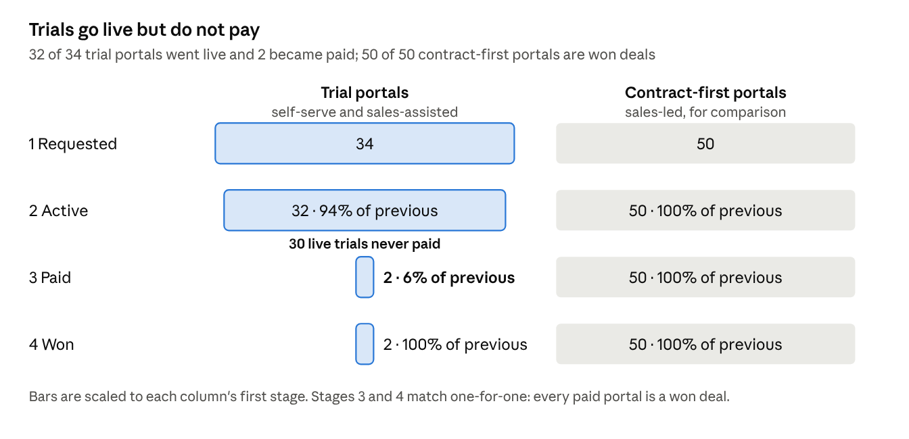
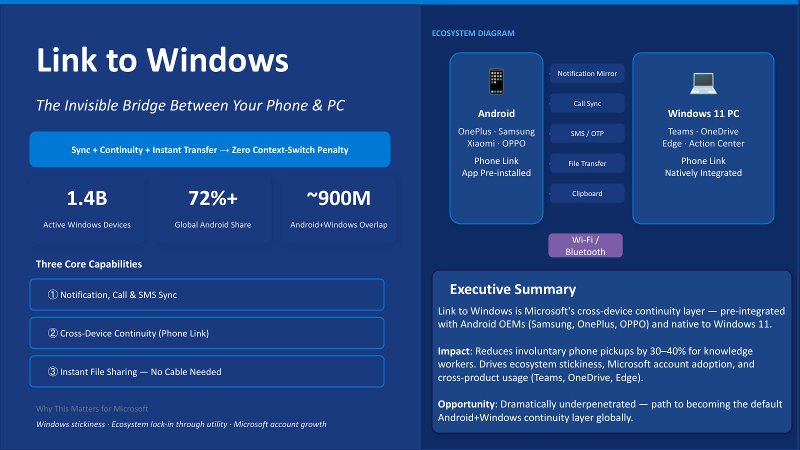

I find where products leak, then build the fix.
I start from the real data, find the step where users drop off, write a PRD an engineer can build from, and usually ship a working prototype to prove it.
The leak: 94% go live, only 6% ever pay. → the fix
- PRDs
- Funnel & cohort analysis
- RICE prioritisation
- North Star metrics
- Clickable prototypes
- LLM workflows
- Model Context Protocol
- SQL
- Go-to-market
- User journeys
- GitHub Actions
00By the numbers
Small team, real numbers.
01Selected work ·
Case files

SwasthyaSaathi: vernacular AI triage
A triage assistant that takes symptoms in Hindi, Marathi or English, flags emergencies with a rule-based gate before any LLM call, and routes patients to the right specialist. Live web app, with an Android build.

AI Try-On for an online jewellery app
A PRD for augmented-reality try-on of high-value jewellery: three personas, pain points mapped to features, six failure states, and India's data protection rules for facial data.

Teardown: Microsoft Link to Windows
Why phone-to-PC switching is a stickiness problem for knowledge workers, which features save the most context switches, and why phone pickup rate is the headline metric.
Problem framing: Uber rides per user and a digital temple
Two open-ended product problems taken apart with 5W1H before any solution: who the users are, what the business needs, the context, the success metrics and the constraints.
E-commerce product analytics
SQL funnel and cohort analysis on 50,000+ transactions to find which buyers drive repeat purchase, with a KPI model for order value, repeat rate and revenue spread.
02Experience
Where I've done it for real
-
Jul 2026 – Dec 2026Indore, India
Product & AI Automation InternCUBE Technologies · B2B SaaS (BIM, CDE, PMIS) for infrastructure projects, 70k+ users
- Mapped the sign-up funnel across 84 trial and paid portals joined to 74 live CRM deals: trials activate at 94% but only 6% convert. Wrote a PRD with RICE-ranked fixes and a clickable prototype.
- Built an automated CRM pipeline (Freshsales API, GitHub Actions) that reports 8 sales reps' calls, meetings and deals to the Director daily and weekly.
- Built an AI workflow that turns call recordings into notes and a branded follow-up deck, cutting assembly time by over 70%.
- Prototyped a self-hosted contact-lookup tool using Model Context Protocol and web scrapers, replacing manual searches.
-
Jun 2025 – Aug 2025Hyderabad, India
Program Strategy & Operations InternGMR Varalakshmi Foundation · skilling program, 120+ learners in 5 villages
- Built a 7-metric retention dashboard whose findings moved 15% of the budget to the highest-churn cohort.
- Found 3 drop-off stages in the funnel and tested 2 reactivation ideas on dormant learners, lifting conversion by 25%.
03About
An engineer who'd rather ship the fix than describe it.
I study Electrical and Electronics Engineering at BITS Pilani, Goa, and I'm spending my practice-school semester as a product and AI automation intern at CUBE.
The habit is the same on every project: get the real data first, find the one step where users drop, write it up so an engineer can build from it, then build a rough version myself to check it actually works. Lately that rough version is often an LLM workflow.
- Now
- Product & AI Automation Intern, CUBE
- Studying
- B.E. Electrical & Electronics, BITS Pilani Goa · 2023–27
- School
- Class XII 95.1% · Class X 93.6%, Hyderabad
- Training
- PM Fellowship, DoraemonDen
- Also
- Organiser, BITSMUN
04Toolkit
What I reach for
Product
- PRDs
- RICE
- North Star & metrics
- Personas & journeys
- GTM
- A/B testing
- Root cause analysis
- Guesstimates
- Wireframing
- Jira
AI & build
- Claude & LLM workflows
- MCP
- Python
- REST APIs
- GitHub Actions
- HTML/CSS/JS prototypes
Data
- SQL
- Funnel & cohort analysis
- Advanced Excel
- Dashboards
- CRM analytics
05 · Say hello
Got a funnel that leaks? Let's talk.
I'm happy to walk through any of these case files, or hear about the problem you're working on.
f20230215@goa.bits-pilani.ac.in